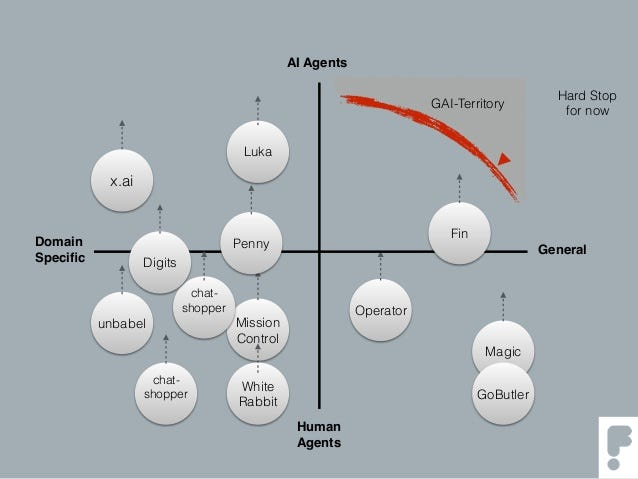
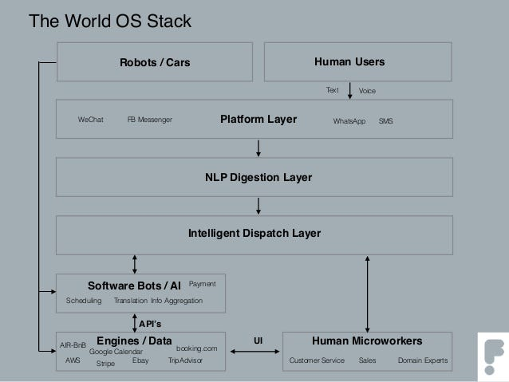

Notes on Felix Petersen’s “The World OS”
I report here my thoughts on the interesting slides by Felix Petersen (I already commented on slideshare but comments there are not easy to…
I report here my thoughts on the interesting slides by Felix Petersen (I already commented on slideshare but comments there are not easy to read, so I wrote here a bit better some notes).
Hi Felix! Above all: Thanks for your interesting analysis: http://www.slideshare.net/fiahless1/the-world-os!
You touched some huge topics: taking a part the socio-economical previsions of a possibe pervasive “freelance economy” (I’m not sure about it, thinking about the European scenario), let me simply comment here on more “light” technical topics.
I like specifically some of your views:
The domain/players diagram (slide 24)
It’s very interesting the diagram where you sketch domain specific vs General purpose in X axis and Human agents vs AI agents in Y axis. I’m thinking a lot me too about this “space”:

In my opinion, Facebook Messenger M could be the best application example to put almost in the center (x, y) = (0, 0) in that diagram!
M is probably the most famous example of application where human experts “collaborate” (teaching) with a AI software(s) to solve people (usres/customers) questions…
BTW, a very interesting interview to Alexander Lebrun, previously wit.ai founder and now “M teacher” here linked:
So maybe the diagram could be integrated with more drawing points for similar “personal assistants” like “pioneer” Apple Siri, more recent Amazon Alexa (that I’d insert in upper-righ quadrant because these lasts are made just by software bots (in these cases there isn’t any human operator behind the scenes, as far as I know).
Asyncronous vs Session-based ?
A minor criticism on slide (slide 25) about your definition of asyncronous vs session-based: is not clear to me what you mean with asyncronous referring to conversational apps.
I’d instead define conversational apps as “permanent-session”-based, in the sense that (smart) bots will maintains user status (profiling, tastes, history of transactions-awareness…”memory” in human sense… :-) )
The architectural stack
I almost agree on the archietcture on slide 29:

Especially I appreciated the “intelligent dispatch layer”! BTW, myself, as developer, I thinking about this topic: softwares that dispatch converstations/tasks among human operators and AI engines! that’s especially interesting in customer care / contact centers scenarios (#customerexperience), and I just sketched an undone project to make taht sort of “dispatecher” for theTelegram platform (see: www.github.com/solyaris/conversator).
Transactional Bots ?
I have a bit different point of view in the low level “engine/data” layer of the stack. It seems to me that you underline something I’d call big-data approach, where a possible centralized intelligence use third parties APIs to get data & services here and there. Is that the vision of few set of big centralized AI taht everyone will use… mmhhh….
Personally, generally speacking, I’m not too much for aggregators / intermediation business models (aka marketplaces, in e-commerce realms), I instead think that there is a great economical potential in P2P services (person-to-person and also “local business-to-local people”) and by the way, that’s maybe is in the direction of what you call “freelance economy” in a future. But this P2P perspective is almost on the opposite side of “general purpose” “strong”-AI proprietary assistants (made by big “take-all” players brands). A possible economical raise is instead in what you call “domain-specific” side.
Specific bots, for specific purposes made up by companies could have huge potential making their own conversational bots.
Lets’ think specifically to conversational commerce realms: e-commerce, booking, e-payments (e.g. any bank could supply a bot for payment transactions), really any seller (also a very micro-seller, e.g. I’m focused on proximity commerce, see my draft project: www.rosposhop.com).
So almost every micro-business could benefit by custom made dedicated (conversational) bots, let me azarde a definition:
Transactional Bots: domain-specific bots, maintained by commercial companies or no-profit organizations, for specific transactional goals
No ? What do you think about it ?
with modesty
giorgio
Originally published on Medium.